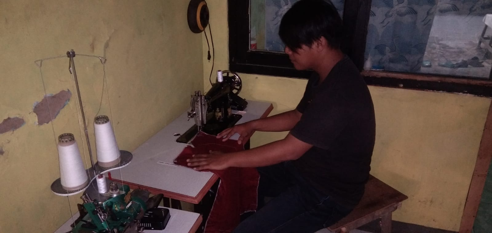
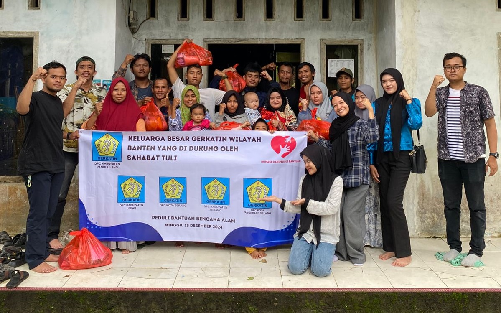
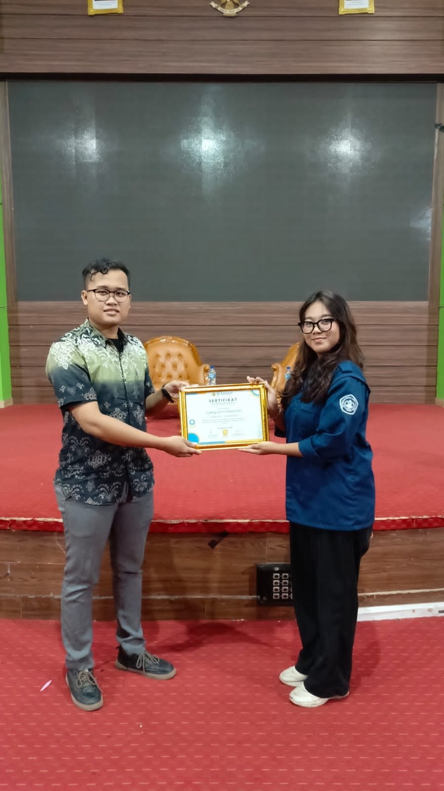
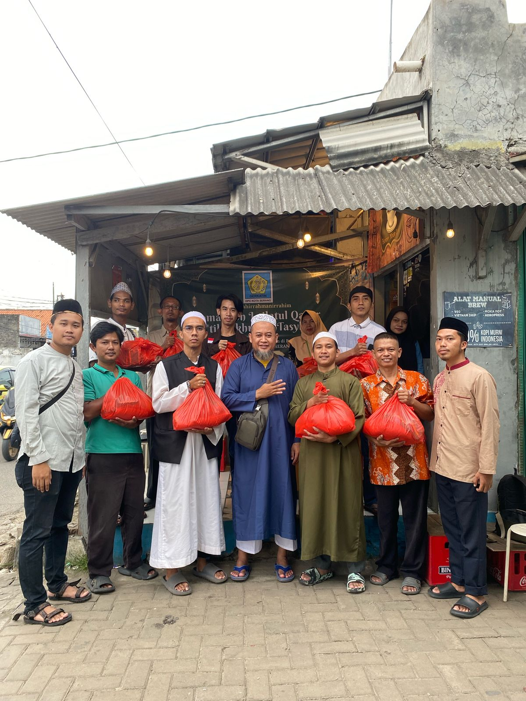
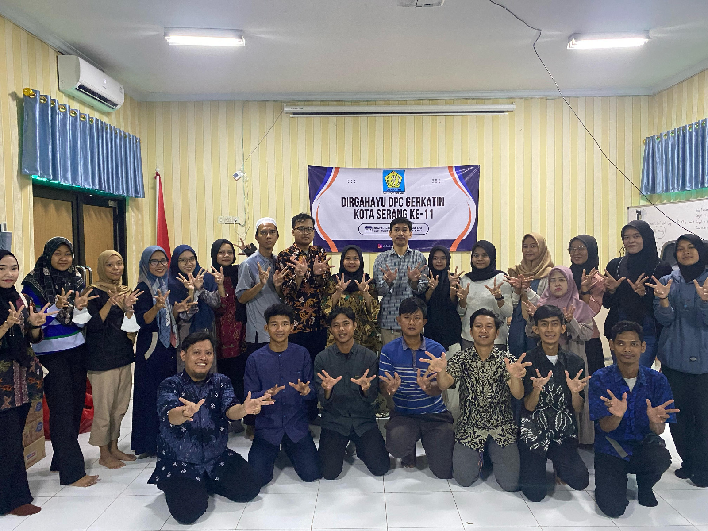

Kegiatan Sosialisasi Bahasa Isyarat (BISINDO) di Alun-alun Kota Serang
Serang, 2025 — Dalam upaya meningkatkan kesadaran dan inklusivitas masyarakat terhadap komunitas Tuli, DPC GERKATIN Kota Serang mengadakan kegiatan Sosialisasi Bahasa Isyarat Indonesia (BISINDO) secara gratis di Alun-alun, Minggu (9/6)...
Acara ini diikuti oleh puluhan peserta dari berbagai usia, termasuk anak-anak, remaja, dan orang tua yang antusias belajar huruf-huruf dasar BISINDO melalui media poster edukatif. Para relawan GERKATIN membimbing secara langsung dengan metode interaktif dan santai.
“Kami ingin masyarakat bisa lebih memahami dan menghargai komunikasi visual yang digunakan teman-teman Tuli,” ujar salah satu panitia.
Selain pengenalan bahasa isyarat, kegiatan ini juga menjadi ruang interaksi antara komunitas Tuli dengan masyarakat umum, membangun rasa empati, dan mendekatkan berbagai kalangan dalam semangat inklusi sosial.
Kegiatan ini rencananya akan digelar secara rutin di ruang-ruang publik lainnya di Kota Serang.

Pemberdayaan Ekonomi Anggota Tuli: Menjahit sebagai Keterampilan Mandiri
Serang, 2025 — Salah satu anggota DPC GERKATIN Kota Serang menunjukkan kemandiriannya melalui keterampilan menjahit di rumah...
Kegiatan ini menjadi bagian dari program pemberdayaan ekonomi komunitas Tuli yang digagas oleh organisasi untuk mendukung kemandirian finansial para anggotanya.
Dengan peralatan menjahit sederhana, anggota GERKATIN ini mampu menghasilkan produk-produk kreatif seperti pakaian rumah tangga, tas, hingga perlengkapan seragam. Kegiatan ini bukan hanya sebagai hobi, namun juga menjadi sumber penghasilan nyata.
“Saya senang bisa bekerja dari rumah dan punya penghasilan sendiri,” ucapnya melalui bahasa isyarat yang diterjemahkan oleh relawan.
Program ini diharapkan dapat menjadi inspirasi bagi anggota lain dan masyarakat luas bahwa keterbatasan pendengaran tidak menjadi hambatan untuk berkarya dan mandiri.
GERKATIN terus mendorong inisiatif serupa melalui pelatihan keterampilan dan pendampingan usaha kecil berbasis komunitas.

GERKATIN Wilayah Banten Salurkan Bantuan Bencana Alam Bersama Sahabat Tuli
Banten, 15 Desember 2024 — Keluarga besar GERKATIN Wilayah Banten yang terdiri dari DPC Kota Serang, Kabupaten Serang, Pandeglang, Lebak, dan Tangerang Selatan menyalurkan bantuan sosial kepada warga terdampak bencana alam...
Kegiatan ini mendapat dukungan langsung dari komunitas Sahabat Tuli sebagai bentuk nyata kepedulian sosial lintas komunitas.
Dalam aksi bertajuk “Peduli Bantuan Bencana Alam”, para relawan GERKATIN menyerahkan paket sembako dan kebutuhan pokok kepada warga yang terdampak. Penyaluran dilakukan secara langsung ke lokasi terdampak di daerah pedesaan, diiringi dengan doa dan semangat kebersamaan.
“Kami percaya bahwa solidaritas dan kepedulian sosial harus menjadi bagian dari perjuangan komunitas Tuli. Kegiatan ini adalah wujud nyata bahwa kami bukan hanya memperjuangkan hak, tapi juga hadir untuk sesama,” ujar salah satu koordinator kegiatan.
Foto bersama dengan spanduk kegiatan menunjukkan kekompakan dan kebersamaan lintas DPC dalam aksi kemanusiaan ini. Kegiatan ini sekaligus menjadi ajang silaturahmi antaranggota GERKATIN dari berbagai kabupaten dan kota.

Pelatihan Pendampingan Disabilitas
Serang, 21 Juni 2025 — Sebuah kegiatan pelatihan pendampingan disabilitas telah sukses diselenggarakan di Aula UNTIRTA, dengan tujuan utama meningkatkan pemahaman dan kemampuan mahasiswa dalam mendampingi penyandang disabilitas...
Acara ini dihadiri oleh puluhan peserta dari berbagai fakultas dan organisasi kemahasiswaan yang peduli terhadap isu disabilitas. Dalam kegiatan ini, para peserta mendapatkan materi tentang inklusi sosial, pendekatan komunikasi yang ramah disabilitas, serta praktik langsung dalam memberikan pendampingan yang empatik dan profesional.
Salah satu momen penting dalam kegiatan ini adalah pemberian sertifikat penghargaan kepada narasumber yang telah memberikan materi pelatihan dengan penuh dedikasi. Penyerahan sertifikat dilakukan oleh panitia pelaksana sebagai bentuk apresiasi atas kontribusi yang diberikan.
"Pelatihan ini membuka wawasan saya bahwa menjadi pendamping disabilitas bukan hanya soal membantu, tetapi juga tentang membangun kesetaraan dan menghargai keberagaman," ujar salah satu peserta pelatihan.
Kegiatan ini diharapkan menjadi langkah awal bagi mahasiswa untuk aktif dalam gerakan inklusi dan menjadi agen perubahan dalam menciptakan lingkungan yang lebih ramah disabilitas di kampus maupun masyarakat luas.

Kegiatan Pembagian Sembako Bersama DPC GERKATIN Kota Serang
Kota Serang, 22 Maret 2025 — Dalam semangat kebersamaan dan kepedulian terhadap sesama, sekelompok warga dari berbagai latar belakang berkumpul di sebuah warung sederhana untuk melaksanakan kegiatan pembagian sembako kepada masyarakat yang membutuhkan...
Acara ini digagas oleh komunitas lokal bersama tokoh masyarakat dan relawan muda, yang terlihat dalam foto sedang membagikan paket sembako berisi kebutuhan pokok. Bertempat di depan sebuah kedai kecil, suasana penuh kehangatan tampak dari wajah para penerima manfaat dan para relawan yang turut serta.
Salah satu panitia kegiatan mengatakan bahwa kegiatan ini dilakukan sebagai bentuk rasa syukur dan kepedulian terhadap sesama, serta diharapkan dapat meringankan beban masyarakat di tengah kondisi ekonomi yang tidak menentu.
“Alhamdulillah, kami bisa berbagi sedikit rezeki dengan saudara-saudara kita. Semoga bermanfaat dan menjadi amal jariyah,” ujar salah satu panitia.
Kegiatan serupa direncanakan akan terus dilaksanakan secara rutin sebagai bagian dari program sosial komunitas.

DPC GERKATIN Kota Serang Rayakan HUT ke-11 dengan Semangat Kebersamaan
Serang, 20 April 2025 — Dalam suasana penuh kehangatan dan semangat kebersamaan, DPC GERKATIN Kota Serang sukses menggelar acara perayaan Hari Ulang Tahun (HUT) ke-11 yang dihadiri oleh puluhan anggota dan simpatisan. Bertempat di sekretariat DPC GERKATIN, acara ini menjadi momentum refleksi perjalanan panjang organisasi sekaligus ajang silaturahmi antaranggota...
Dengan mengusung semangat “Inklusi, Solid, dan Mandiri”, kegiatan ini diramaikan oleh berbagai sesi seperti sambutan pengurus, pemotongan tumpeng, hingga foto bersama dengan pose khas Bahasa Isyarat Indonesia (BISINDO), yang melambangkan identitas kuat komunitas Tuli.
Ketua DPC GERKATIN Kota Serang menyampaikan rasa syukur atas bertambahnya usia organisasi dan mengajak seluruh anggota untuk terus bergerak bersama memajukan komunitas disabilitas, khususnya Tuli di Kota Serang.
“Kami tidak hanya merayakan usia, tetapi juga perjuangan dan semangat untuk terus memberikan kontribusi nyata bagi masyarakat,” ungkapnya.
Perayaan ini turut dimeriahkan oleh kehadiran generasi muda Tuli yang menunjukkan antusiasme tinggi dalam membangun organisasi yang inklusif dan berdaya.